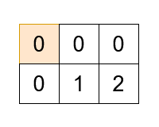

| Category | Difficulty | Likes | Dislikes |
|---|---|---|---|
| Algorithms | Medium | 5 | 1 |
You are given a 2D array grid of size m x n, and an integer k. There are k cells in grid containing the values from 1 to k exactly once, and the rest of the cells have a value 0.
You can start at any cell, and move from a cell to its neighbors (up, down, left, or right). You must find a path in grid which:
grid exactly once.k in order.Return a 2D array result of size (m * n) x 2, where result[i] = [xi, yi] represents the ith cell visited in the path. If there are multiple such paths, you may return any one.
If no such path exists, return an empty array.
Example 1:
Input: grid = [[0,0,0],[0,1,2]], k = 2
Output: [[0,0],[1,0],[1,1],[1,2],[0,2],[0,1]]
Explanation:

Example 2:
Input: grid = [[1,0,4],[3,0,2]], k = 4
Output: []
Explanation:
There is no possible path that satisfies the conditions.
Constraints:
1 <= m == grid.length <= 51 <= n == grid[i].length <= 51 <= k <= m * n0 <= grid[i][j] <= kgrid contains all integers between 1 and k exactly once.